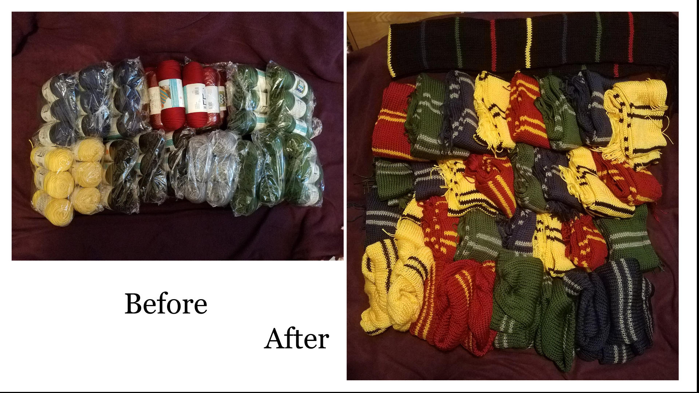
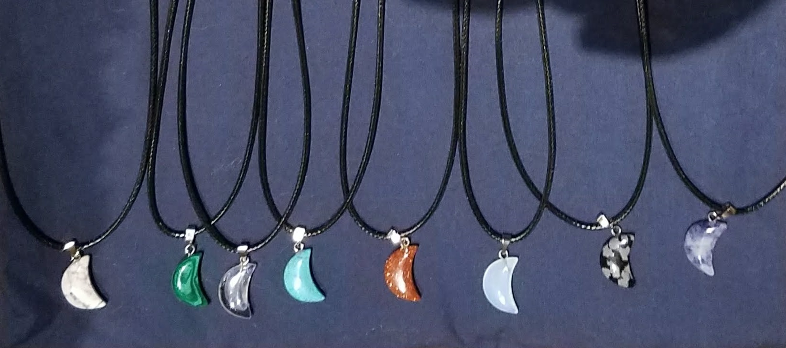
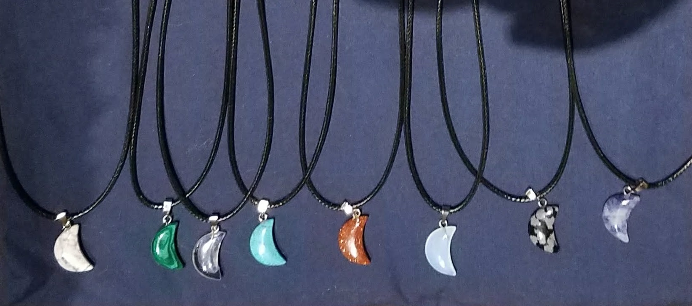

Random Stringz & Things was created when two crafty sisters joined forces in the pursuit of hobbies and entertainment... and maybe a little extra pocket change. Both involved in multiple crafts, the name of the duo had to somehow indicate the variety of products that could and would be involved while leaving room for expansion into new and asunyet charted hobbies.
Random Stringz & Things was born.
Originally focused on jewelry and yarncraft, it has since expanded to include sewing and embroidery as well.
Stay tooned to see where it might go from here!
Sometimes the transition from parts to a whole seems more like magic. How a ball of yarn can turn into a scarf or a bit of thread and few bobbles can turn into a beautiful and unique piece of jewelry.

~~~~~
While most crafts don't actually require many tools to do, collecting tools of trade can become a hobby of it's own.


I currently have two sewing machines, a serger, and an embroidery machine.
However, every time I see a sewing machine that has fancy new features, or is old and a classic workhorse, I have to remind myself that two is enough.
Stringz includes all creations using yarn or thread. Though most often this means products created through kniting or crochet.


Things tends to includes everything not made of yarn or string.
At the moment this includes:
Creating something with a few pieces of fabric and a sewing machine can be so much fun! The best part is that most items created with a sewing machine are not just beautiful, they are also functional.
For example, this tote bag not only looks amazing, but it can also carry anything from books or toys, to laundry or groceries.

~~~~~
 Jewelry is as much fun to make as it is to wear.

Jewelry is as much fun to make as it is to wear.

~~~~~
2020 brought with it a need to learn yet a new skill, how to make a cloth facemask. Several masks were created and donated to a local hospital to ensure our front line workers had the ppe required to keep their families safe at home during the Novel Coronavirus outbreak.


All of the masks made include a removable nose wire to improve fit. This wire is meant to be removed prior to laundering.
~~~~~
Craft is defined as a skill used in making something. Everything from woodworking to baking can be considered crafts. Most crafts are required to better our lives, even if they have been taken over by industry and machines in large warehouses. Keeping the skills alive from one generation to the next will help us, not only to connect to our past, but to create for our future.
~~~~~